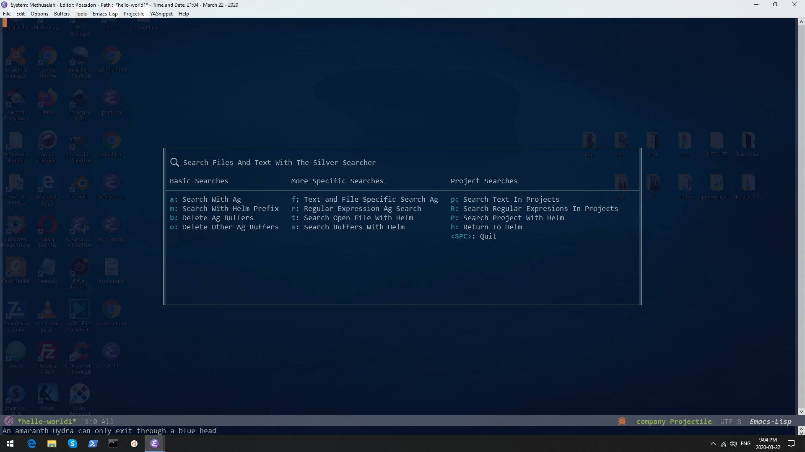

This post covers the following sections from my init.
Finding Files
Ediff
Preamble
Emacs is old school. You're either new to it - which means you wouldn't be here unless it was your type of thing - or you know what you're looking for. In either case, go to the side bar of this page and click on the 'Emacs' tag. Then read the posts y date from oldest to newest.
In the last emacs post I covered lines 2004 - 2188. This post covers lines 2188 - 2379. I include the lines for anyone that wants to patch together the entire init from start to finish. The lines won't always match up because I take stuff out when I'm in the init.
Finding Files
First the diff and Ediff code is on hold. Diff and Ediff in emacs are great packages, a lot of people however enjoy newer programs for managing changes in files, especially when working with git revisions. I use a program called Beyond Compare with git and Diff and Ediff with most files. I've yet to put my diff/ediff system into a hydra though. So that comes later.
query-replace-regexp is just like C-f in your browser. You need the code below to do that with emacs. Anzu shows the number of matches in a give region. Ag is the Silver Searcher executable. It's a linux program so you have to find a version compiled just for windows, which you can do on the net, or with the version I referenced in earlier posts. You can of course use other search utilities in your hydra. In the Ag case you set the path to the ag-executable-p variable you set earlier. Helm-ag enables use of the helm interface to access the ag results.
;find files hydra
(defvarfind-files-title (with-octicon"search""Search Files And Text With The Silver Searcher"))
;generate hydra
(pretty-hydra-defineSearch-Files (:titlefind-files-title:quit-key"q":colorteal )
("Basic Searches"
(("a"ag"Search With Ag")
("m"helm-ag"Search With Helm Prefix")
("b"ag-kill-buffers"Delete Ag Buffers")
("o"ag-kill-other-buffers"Delete Other Ag Buffers")
);end basic"More Specific Searches"
(
("f"ag-file"Text and File Specific Search Ag" )
("r"ag-regexp"Regular Expression Ag Search")
("t"helm-ag-this-file"Search Open File With Helm" )
("s"helm-ag-buffers"Search Buffers With Helm")
);end specific"Project Searches"
(
("p"ag-project"Search Text In Projects" )
("R"ag-project-regexp"Search Regular Expresions In Projects")
("P"helm-ag-project-root"Search Project With Helm")
("h"hydra-helm/body"Return To Helm":colorblue )
("<SPC>"nil"Quit":colorblue )
);end project
);end hydra body
);end pretty-hydra-find-files
(bind-key"<C-m> s"'Search-Files/body)

Image: Search Hydra
Ido Mode
Ido mode is an alternative to helm. It structures searches in the minibuffer (whereas Helm enlarges greatly the mini-buffer and includes utilities.) With Helm my Ido-mode use drops off, but I include shortcuts to use it anyway. I enjoyed always use of Ido, only helm works for me a little bit better.
This kind man didn't invent the term scientist so you could make a mockery of earthly geometrics! He did it because science is badass, just like him. Taking science seriously is the first step to better health and a better world for all. You can take that first step here.
"We need very much a name to describe a cultivator of science in general. I should incline to call him a Scientist." ~ William Whewell.
Seriously though, most of our sciency posts are really about computer science, namely Emacs - but don't be swayed by the Old-Skoolers. If you're choosing a text editor for the first time, Emacs is dead.
Didn't you get the memo? And who are you anyway? Frankenstein? Give it up. Get over it. Go with Webstorm, or Sublime - open up your wallet and pay the man already. Or if you absolutely need to get cranked on Javascript, hit up Atom...it's free, and going places.
Having said all that, we use Emacs, and around here, the Earth is round.